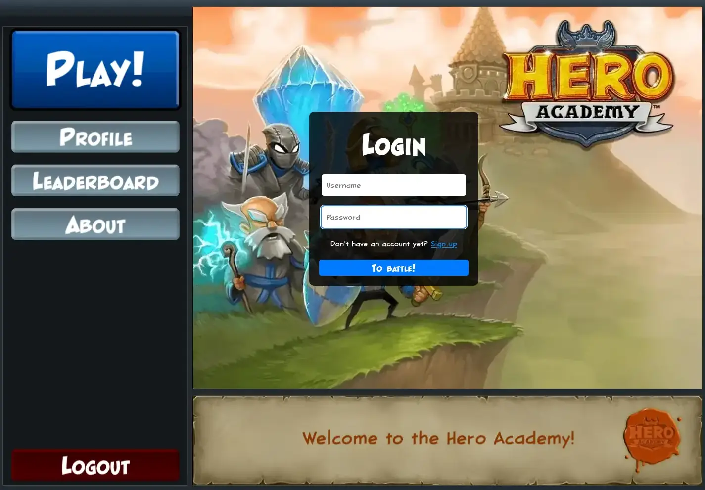
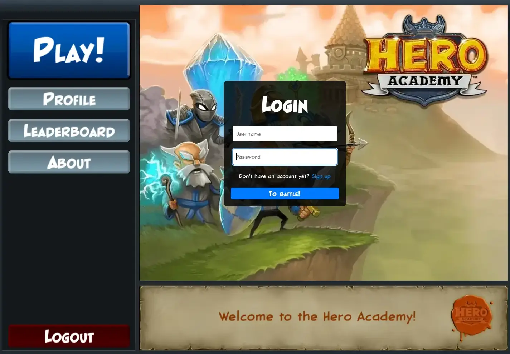

I'm a full-stack developer based in Brussels, Belgium.
Before becoming a developer I worked in the HR department of companies like Atos and Amazon. It was there that I came into contact with programming in an effort to automate some of the repetitive tasks my colleagues and I were enduring, first with VBA and later with python.
When the pandemic hit I decided to take the plunge and go full on webdev with Typescript, Mongo and Node.
Now I get to spend my time learning and creating cool things.
I'm an avid consumer of media, here are some things I recommend at the moment:
- Gaming: Street Fighter 6
- Reading: Children of time ❤️
- Watching: The Bear
 

Fan Academy, a revival of the game Hero Academy by Robot Entertainment. I coded the game from scratch following the gameplay and using the assets of the original. The project uses Phaser, Express, Colyseus and MongoDB and its code is open source.
The game counts with a small, dedicated playerbase, which fulfilled my goal of reviving a dead game and having someone to play it with :)